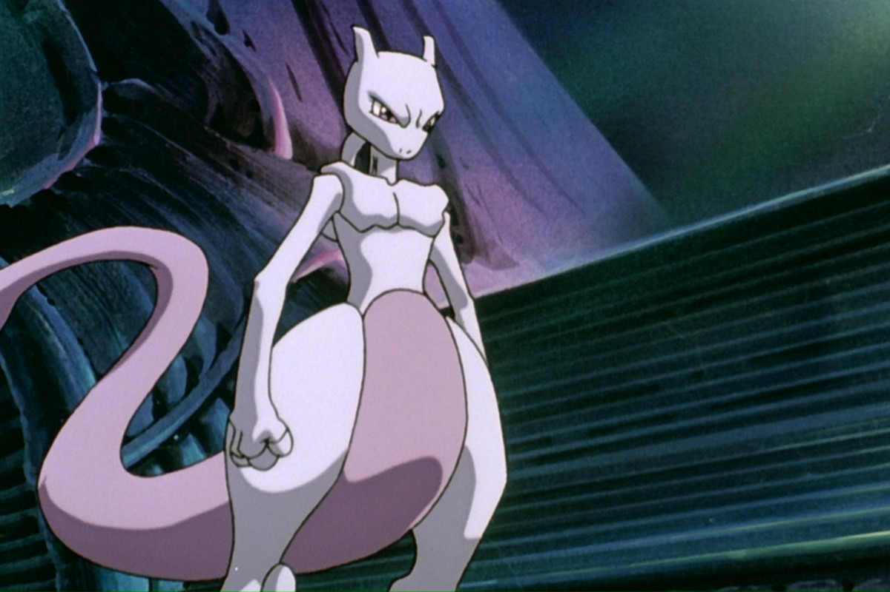
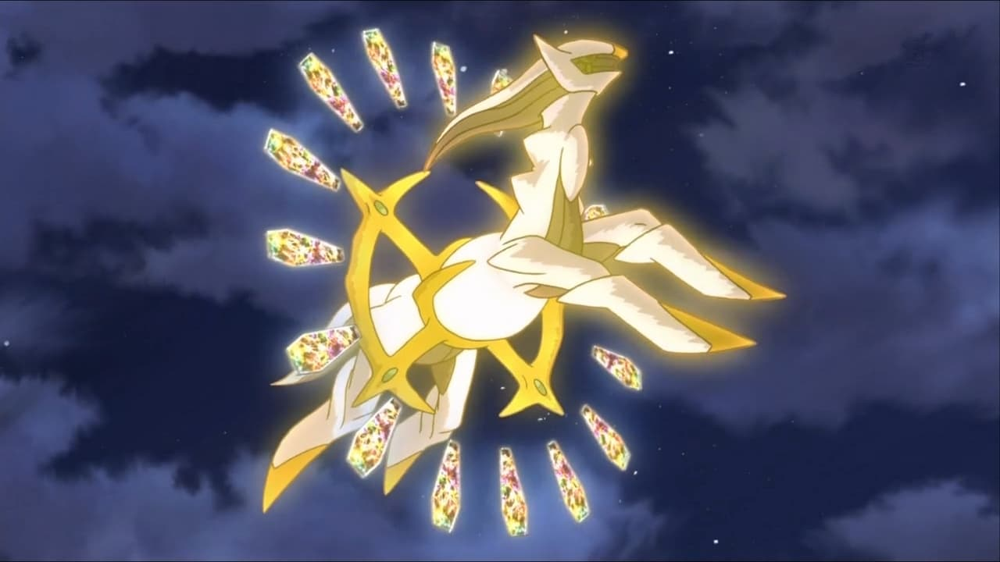

I POKEMON
In un vortice di completo nulla e caos, fece la sua comparsa un uovo Pokémon, che una volta schiuso diede alla luce Arceus, il primo Pokémon esistente.
Arceus poi creò Dialga, Palkia e Giratina dando loro rispettivamente il potere sul tempo, sullo spazio e sul caos.
Giratina, come punizione per la sua natura distruttiva, venne mandato da Arceus a vivere nel Mondo Distorto.
Arceus creò poi le due dimensioni dello spazio e del tempo e le donò a Dialga e Palkia.
Arceus creò Uxie, Mesprit e Azelf donando loro la conoscenza, le emozioni e la volontà con il compito di distribuirli
a tutti gli esseri viventi che sarebbero stati creati nel mondo Pokémon.
L'alta pressione dei fondali marini diede vita a Kyogre; Groudon nacque dalle profondità della Terra,
mentre Rayquaza venne formato dai minerali presenti nella fascia d'ozono.Kyogre e Groudon procedettero
rispettivamente a riempire i mari e a creare i continenti.
Regigigas spostò con le sue corde i continenti, formando così le regioni, e creò i tre golem:
Regirock, Regice e Registeel, usando rispettivamente argilla, ghiaccio e magma.
Arceus creò l'Adamasfera, la Splendisfera e la Grigiosfera prima di cadere nel suo profondo sonno.

